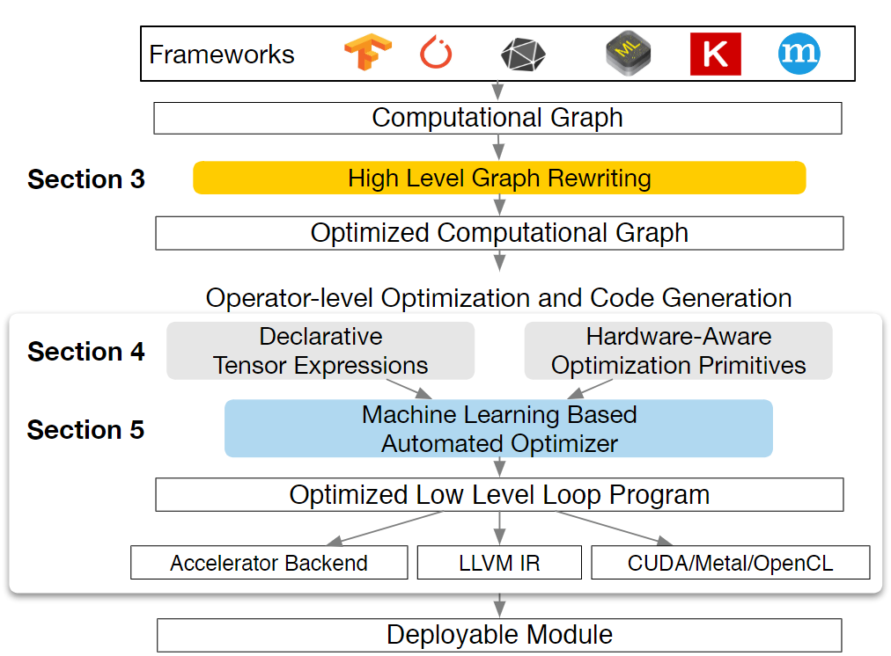
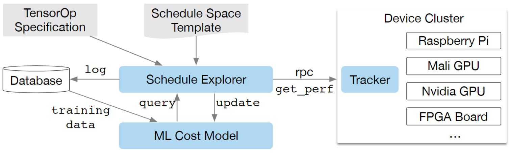

AI编译器论文阅读-01
本文最后更新于：2023年11月17日 早上
TVM以及autoTVM的原文，一作都是陈天奇。
TVM: An Automated End-to-End Optimizing Compiler for Deep Learning ——2018
Learning to Optimize Tensor Programs ——2019
TVM: An Automated End-to-End Optimizing Compiler for Deep Learning
Abstract
人工智能的需求越来越高，机器学习的应用场景越来越广blabla
我们提供了一种AI编译器TVM。TVM向外界暴露出图级和算子级的优化工作，以在不同的硬件平台为深度学习工作负载提供性能可移植性。
TVM解决了深度学习特有的优化难题，如算子融合、硬件原语映射、内存延迟隐藏等。他还采用了一种新型的、基于继续学习的成本建模方法来探索自动调优问题。实验表明效果很好，已经有大公司在使用。
1. Intro
现有的DL框架如TensorFlow、Pytorch等都是依靠计算图的中间表示来优化，如自动微分和动态内存管理等。但是图级优化过于高级，无法看到和处理特定硬件后端的算子级别优化。大多数后端的优化都是依赖于高度定制化的算子库，当前，在各种DL框架中为各种硬件后端提供支持需要大量的工程努力。
即使对于已经支持的后端，框架也必须在一下两种方案之间做出艰难选择：1. 避免产生不在预定义算子库的算子而实现图优化 2. 使用包括新算子但尚未优化的图 （对高速发展的机器学习来说，新算子是不可避免的）
为了对不同的硬件后端启用图级和算子级的优化，作者采用了一种完全不同的端到端的方法。作者构建了 TVM，这是一个编译器，它从现有框架中获取深度学习程序的高级规范，并为各种硬件后端生成低级优化代码。
简单来说，TVM要解决的问题是适配。将模型部署到不同的硬件上依赖硬件厂商的定制化库，需要大量的手工优化。而TVM这种端到端的编译器方案解决了不同框架下的不同模型部署到不同硬件平台上的适配问题。
方案的核心包括三大问题：
- 如何进行高级别的图优化
- 如何进行硬件/算子级别的优化
- 如何解决组合搜索空间的问题
2. Overview
TVM组件

TVM系统首先将现有框架模型作为输入，并转为计算图表示，然后执行高级数据流重写以生成优化图。在算子级优化层面，TVM为给定硬件目标的算子识别一组可能的代码优化。并采用机器学习的代价模型来寻找优化的算子，最后进行代码生成。
3. Optimizing Computational Graphs
计算图blablabla，实现了一些图级优化，如算子融合、常量折叠、静态内存规划、数据布局转换等
4. Generating Tensor Operations
TVM 通过在每个硬件后端生成许多有效的实现并选择优化的实现，为每个算子生成高效的代码。这个过程建立在 Halide 将描述和计算规则 (或调度优化) 解耦的想法的基础上，并将其扩展为支持新的优化 (嵌套并行、张量和延迟隐藏) 和 广泛的硬件后端。
4.1 张量表达与调度空间
TVM引入张量表达式语言来支持自动代码生成，每个计算操作都指定输出的形状，和描述如何计算其中每个元素的表达式。这种语言不指定循环结构或其他执行细节，为后端添加硬件感知优化的灵活性。
通过调度原语来构建调度。
4.2 协作式嵌套并行
并行性是提高效率的关键，大多数现有的方案都采用一种称为嵌套并行的模型，这种模型使用并行调度原语来实现并行，每个任务递归地细分为子任务并分配到线程上。是一种无共享嵌套并行，因为工作线程无法在同一阶段查看兄弟线程的数据。
有一种无共享方式的替代方法。线程组可以协作获取他们都需要的数据放入共享内存空间中。这种优化利用GPU内存层次结构，实现跨线程的数据重写。TVM使用调度原语来支持这种优化。
在没有显示声明内存范围时，将自动将计算阶段标记为thread-local。共享任务必须计算组内所有工作线程的依赖关系，还必须正确插入内存同步屏障，以保证数据对消费者可见。
4.3 张量化
DL工作负载具有较高的计算强度，通常可以分解成张量算子，如矩阵乘法或一维卷积。这种自然分解引发了添加张量计算基元（原语）的趋势。调度原语的增加为基于调度的编译增加了挑战性，使用他们可以提高性能，但是编译框架必须无缝集成所有使用的调度原语。指令往往是可变长的，每个都具有不同的数据布局，此外由于新的硬件在源源不断的出现，我们需要一个可扩展的调度原语方案。
我们通过张量内在声明的机制使目标硬件的内在特性与调度分离，使TVM可以轻松支持新的硬件架构。这样就可以使用相同的张量表达式语言来声明每个新硬件的底层行为。此外，还引入了一种调度原语，用相应的内部函数来替换计算单元。编译器将计算模式与硬件的匹配降低到了相应的硬件内部。
4.4 显式内存延迟隐藏
延迟隐藏是指将内存操作与计算重叠以最大限度地利用内存和计算资源的过程。它需要不同的策略，具体取决于目标硬件后端。在 CPU 上，内存延迟隐藏是通过同步多线程 或 硬件预取 来隐式实现的。
GPU 依赖于许多线程的快速上下文切换。相比之下，诸如 TPU 之类的专用 DL 加速器通常倾向于使用解耦访问执行 (DAE) 架构记性更加精简的控制，并将细粒度同步的问题转移给软件。
5. Automating Optimization
鉴于丰富的调度原语集合，剩下的问题是为 DL 模型的每一层找到最佳的算子实现。在这里，TVM 为与每一层关联的特定输入形状和布局创建了一个专门的算子。这种专门的优化提供了显著的性能优势 (与针对较小的形状和布局多样性的手工代码相比)，但它也提出了自动化的挑战。系统需要选择调度优化：例如修改循环顺序或优化内存层次结构，以及特定于调度的参数，例如切片大小和循环展开因子。这样的组合选择为每个硬件后端创建了算子实现的大的搜索空间。为了应对这一挑战，构建了一个具有两个主要组件的自动调度优化器：一个新配置的调度搜索器 以及 一个预测给定配置性能的机器学习成本模型。

5.1 调度搜索空间的规范
我们构建了一种调度模板的规范API，来让开发者在配置空间中声明knob。这一规范允许开发者结合特定领域的知识，来指定可能的调度。同时我们还为每个硬件后端创建了一个通用主模板，该模板可以根据张量表达式语言表达的计算描述自动提取可能的knob。对上层来说，我们希望可以有尽可能多的配置选择，并让优化器来管理这种巨大配置空间造成的计算负担。优化器必须可以搜索数十亿可能的配置。
5.2 基于机器学习的代价模型
从大型配置空间中找到最佳调度有以下几种方法：
-
黑盒优化，即自动调整。该方法用于调优高性能计算库。然而，自动调整需要许多实验来确定一个好的配置。
-
构建一个预定义的成本（代价）模型来指导特定硬件后端的配置搜索。理想情况下，一个完美的成本模型会考虑影响性能的所有因素：内存访问模式、数据重用、管道依赖性和线程模式等。不幸的是，由于现代硬件日益复杂，这种方法很繁琐。此外，每个新的硬件目标都需要一个新的 (预定义的) 成本模型。
而我们则采用统计的方法解决成本模型问题。这种方式的搜索器每次会输出能够提高算子性能的配置。对于每个调度配置，使用一个ML模型预测其运行时间。这种模型使用搜索期间手机的运行时测量数据进行训练，而不需要详细的硬件信息。在优化过程中，会定期更新模型，以提高后续的准确性。